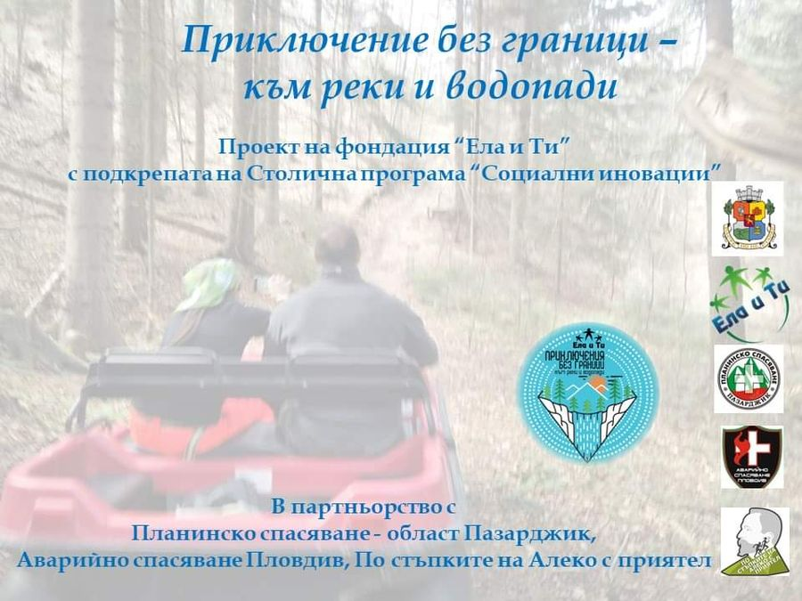

Приключение без граници — към реки и водопади
Приключенски посещения на красиви природни забележителности, труднодостъпни или напълно недостъпни за хора с увреждания.
Проектът спечели финансиране от Столична програма „Социални иновации“ — 2021. Целта е да се организира приключенско посещение на красиви природни забележителности, които са труднодостъпни или изцяло недостъпни за хора с увреждания, за да изпитат едно различно, вълнуващо и екстремно преживяване.
Първото посещение беше на водопад Скаловитец край село Костенец — с всъдеходи, точно когато водопадът е най-пълноводен.
За втори път се проведе и каране на водни колела по екопътека Искър — Златна Панега. През октомври 2020 година доброволци помогнаха на десет души с увреждания да се качат на водно колело и да изминат маршрута.
Кой го подкрепя
- Столична програма „Социални иновации“ 2021 — финансиране
Събития по проекта
Как да се включиш
За участие или доброволчество пишете на info@elaiti.com.
